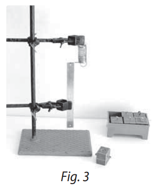
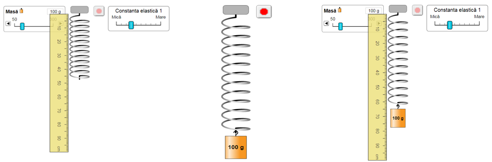
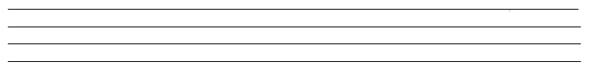
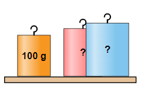

Scopul lucrării:Verificarea legii lui Hooke, determinarea constantei de elasticitate și a masei necunoscute a unui corpului.
Aparate și materiale necesare: o riglă milimetrică (ruletă); un stativ; un resort (sau un fir elastic); un set de mase marcate, un corp cu masă necunoscută.
Remarcă:Lucrarea de laborator poate fi realizată utilizând laboratorul virtual, accesând link-ul:
Lucrarea de laborator
Consideraţii teoretice:În montajul experimental (fig.3) al acestei lucrări de laborator este utilizat un resort și corpuri cu mase marcate și necunoscute. Corpul suspendat la capătul de jos al resortului acţionează asupra lui cu o forţă deformatoare egală cu ponderea (greutatea),
P=mg. Întrucât în stare de echilibru forţa de elasticitate este egală în modul și de sens opus cu ponderea,obţinem expresia:
P=Fel sau
mg=k·Δl, de unde
k = mg/kΔl.

MODUL DE LUCRU:
1. Măsurați cu rigla lungimea inițială
l0 a resortului cu rigiditatea aleasă cu ajutorul comutatorului.
2. Alegeți masa unui corp și suspendaţi-l de capătul liber al resortului.
3. Măsurați cu rigla lungimea finală
l.
4. Determinați alungirea produsă conform relației
Δl=l-l0 .
5. Repetaţi experienţa de 5-6 ori adăugând de fiecare dată noi mase marcate.
6. Introduceţi datele experimentale obţinute în tabelul de mai jos.
7. După ce ați determinat constanta elastică a resortului, suspendați de acest resort un corp cu masă necunoscută.
8.Determinați alungirea
Δl2.
9.Aplicând relația
mn·g = kmed·Δl2 , determinați masa corpului:
mn = kmed ·Δl2/g .
10.Înscrieți datele în tabel.
11.Construiţi graficul dependenţei
Fel = mg în funcţie de alungirea resortului
Δl și determinaţi constanta de elasticitate calculând panta dreptei obţinute.
12.Comparaţi rezultatul cu valoarea medie căpătată anterior.
13.Calculaţi erorile absolută și relativă comise la măsurarea constantei de elasticitate.
14.Prezentaţi rezultatul final sub forma:
k = (kmed ± Δkmed ) N/m ; ε = ...%.
15.Formulați concluziile referitor la rezultatele obţinute.

CALCULE: 1) Δl = l-l0; 2) mn·g = kmed·Δl2; 3) mn = kmed ·Δl2/g; 4) k = (kmed ± Δkmed ) N/m ; 5) ε = ...%.
| Nr | m (kg) | l0(m) | l(m) | Δl1 (m) | K (N/m) | ΔK(N/m) | Δl2 (m) | mn(kg) |
|---|
| 1. | | | | | | | | |
|---|
| 2. | | | | | |
|---|
| 3. | | | | | | |
|---|
| 4. | | | | | | |
|---|
| 5. | | | | | | |
|---|
CONCLUZII:


Întrebări şi exerciţii:
1.De ce la capătul liber al resortului dinamometrului şcolar nu se pot suspenda greutăţi cu masă mare?
2.Explicaţi cum trebuie să fi e forma dependenţei forţei elastice în funcţie de alungirea resortului.